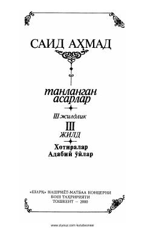

TASaid Ahmadning xotiralari va adabiy mulohazalari to'plami — uchinchi jild.
Bu kitob O'zbekiston Xalq yozuvchisi Said Ahmadning uch jildlik tanlangan asarlarining uchinchi jildi bo'lib, xotiralar va adabiy o'ylardan iborat. Birinchi bobda vafot etgan ustoz yozuvchilar, ikkinchi bobda hozirgi kunda ijod qilayotgan yozuvchilar haqida fikrlar bayon etiladi. Uchinchi bobda muallif o'zining shaxsiy iztiroblari va hayot tajribalarini o'quvchi bilan baham ko'radi.